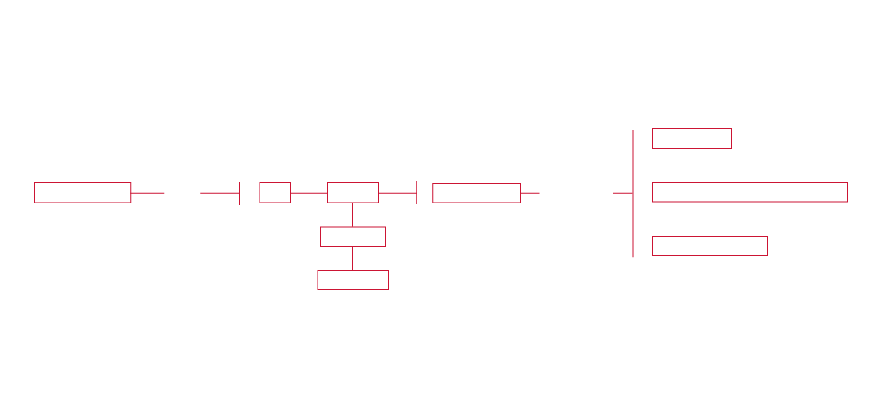
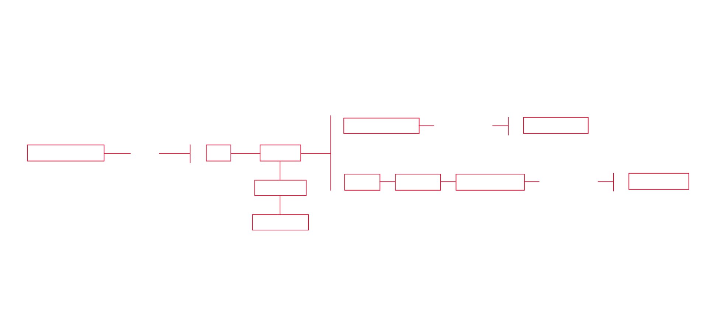

Steps of the procotol
The first main source of information is the website Subzin, in which it's possible to find out all those films and TV series, whose subtitles contain the researched query. Here it's achievable to obtain a complete list of the TV shows which name the NSA, the Usa surveillance agency. Initially three queries were used: "NSA", "surveillance" and "privacy". However the latest two provided results that were too wide, both in terms of quantity and quality, so they are eliminated. Moreover it's necessary to specify that: if "surveillance" takes care of a quite wide scenery, the "NSA" delimits this scenery with precision and in a univocal way. Through the employment of Kimono for Google Chrome, it's possible to turn the list realised by Subzin into a structured dataset, which is made of:
-the title of all the series that mention the NSA;
-the title of the episodes;
-the years of the episodes' release;
-the sentence containing the word "NSA";
-a link for every sentence through which it's possible to access to a page with the contest, that means with the two sentences mentioned before and the two sentences mentioned after. At this point the episodes and the sentences with the word "NSA" for every TV shows are counted.
In order to have some more detailed information about the series of interest, it's necessary to use the website IMDb. Here all the 153 series' schedules are researched. As consequence, always using Kimono, an API is realised. It contains:
-the title;
-the genre;
-the country in which it is made;
-the years in which it is broadcasted.
Using all these informations, it's possible to count the number of episodes by genre by year and the number of episodes by country.

The second part of this work takes into account the context. Indeed the first part is merely quantitative while the second one is qualitative. Using Kimono, it's possible to gather part of the dialogue which constitute the context of every sentence containing the word "NSA" (1075 sentences containing this word with the relative link to the contest) from the links grouped before on Subzin. These links are inserted in Kimono and the crawl is activated. The result is a datatest in which in every line there is a sentence (5375 total sentences). All those sentences are copied in the website textalyser.com, which allows to have a list with the most common words with the number of times they appear in the text. Only those with a frequency major than 6 have been selected. Then these ones have been divided in one of these two categories: "connected to NSA" or "other words".
At this point a script, created with the programming language Python, search inside each dialogue all the keywords and if they appear together the script creates a line in a chart: the first column (source) is filled with a keywords, and the second one (target) with one other keyword found in the same dialogue. Therefore in the chart a line is created everytime two keywords are together in the same dialogue and each line can appear twice or more, that is everytime the two words are found together in a dialogue.
Finally a visual analysis is achieved through the clips containing the instant in which the NSA is mentioned. 10 episodes are selected between the TV shows in which the Security Agency appears more frequently, so a video is created using 66 clips. To explain all the elements that appear watching the video, each clip is described using five guidelines:
- the purpose of the NSA's activity that more clearly appear to the audience (security or surveillance),
- the scene description (calm, tense, agitated and very agitated),
- the location (outdoor, car, indoor, office),
- the main two colors,
- the presence of a phone or a prisoner, two characteristic elements recognized in many clips.
